Premium Hair Restoration Treatments in Jaipur for Natural, Permanent & High-Density Results
At Kezza Hair & Skin Clinic, we combine advanced surgical expertise with cutting-edge medical technology to offer a complete range of hair transplant and hair regrowth solutions. From FUE and DHI to personalized PRP therapy and hairline reconstruction, every treatment is customized for natural density, long-term growth, and complete patient comfort.
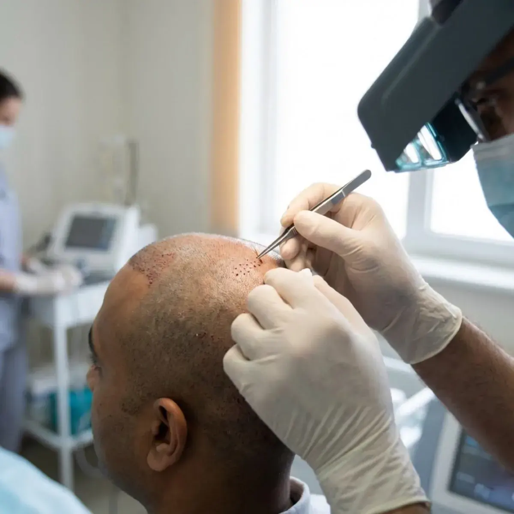
FUE Hair Transplant — Maximum Density & Zero-Scar Technique
Follicular Unit Extraction (FUE) is the gold standard in modern micro-surgical hair restoration. Each follicular graft (1–4 hairs) is individually harvested under digital microscope guidance, leaving zero linear scar and yielding dense, permanent growth that blends seamlessly with your natural hairline. Read the full FUE hair transplant guide.
DHI Choi Implanter — Ultra-High Density Without Scalpel Cuts
Direct Hair Implantation (DHI) utilizes patented Choi Implanter Pens to load, angle, and implant follicular grafts simultaneously without creating pre-made scalpel incisions. This ensures microscopic depth calibration, 360-degree angle control, zero follicle handling trauma, and maximum graft density per cm². Read the full DHI hair transplant guide.
“Choi Pen technology allows channel creation and graft placement at the natural 40–45 degree scalp angle simultaneously. We achieve up to 65+ follicular units per cm² with zero need to shave existing hair.”
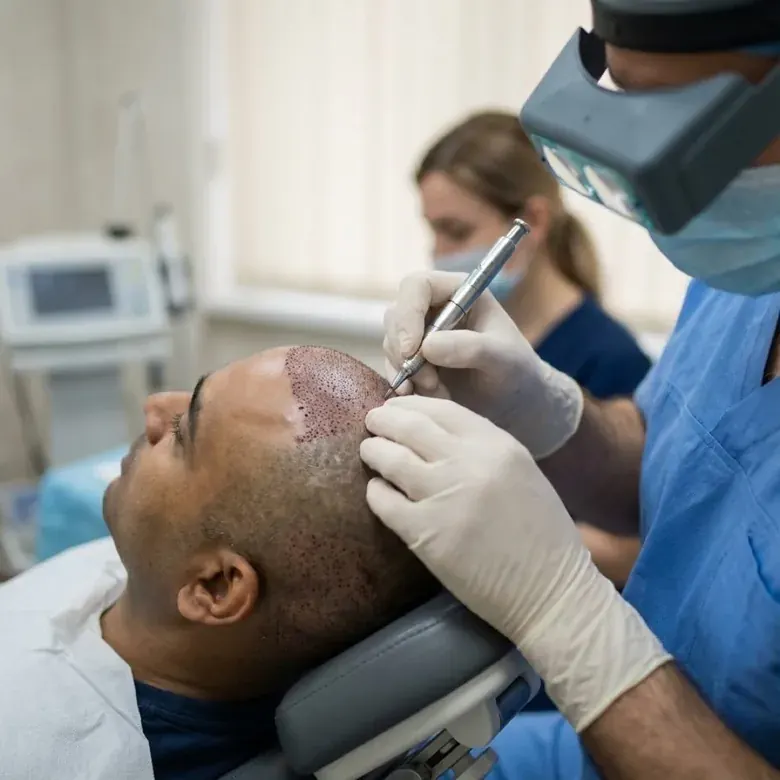
Choi Pen TechnologyNatural Hairline Creation — Kezza's Signature Artistry
A successful hair transplant is defined by the hairline. Our surgeons combine mathematical facial golden ratios with single-hair micro-feathering to design a hairline customized to your age, facial bone structure, and natural swirl direction.
Facial Golden Ratio Symmetry
Precise laser measurement matching the trichion-to-glabella proportion, ensuring natural harmony with your brow and facial frame.
Single-Hair Micro-Feathering
Only ultra-fine single follicle grafts are selected for the leading 2-3 rows, eliminating any doll-like or artificial borders.
Age-Appropriate Contour
Strategic temporal angle restoration that looks elegant today and ages with distinguished natural grace across decades.
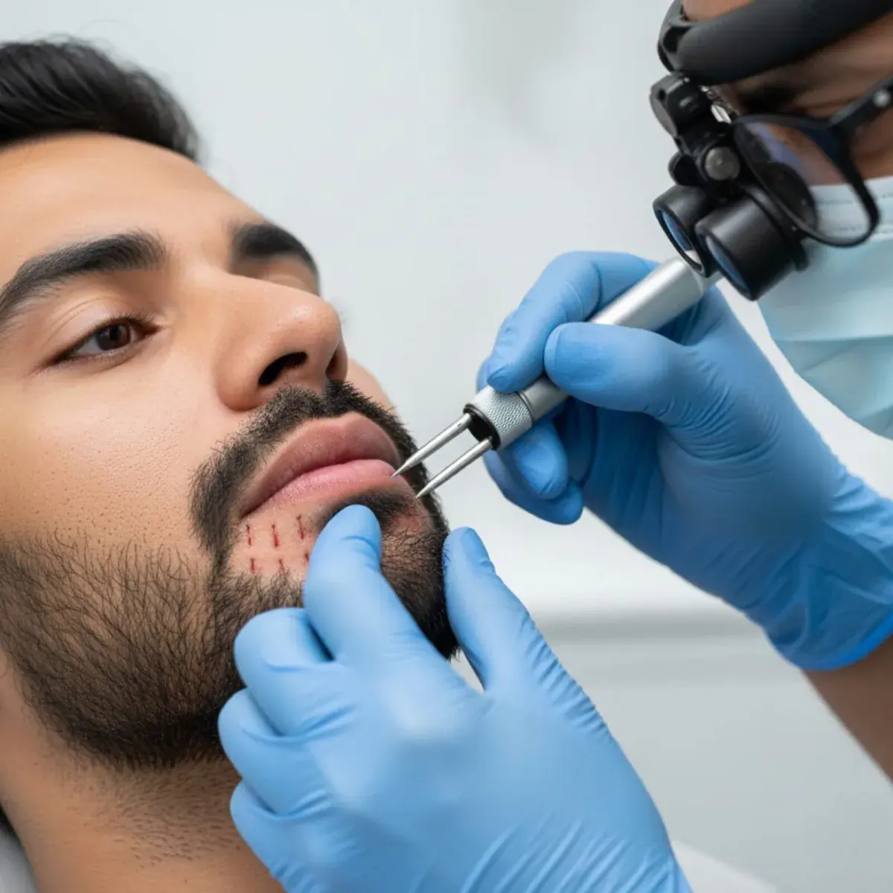
Facial MasculinityMasculine Definition Through Precision Beard & Mustache Grafting
Fix patchy growth, scars, or genetically thin facial hair with micro-punch FUE. Our surgeons calibrate the acute acute-angle placement required for cheek, chin, and jawline whiskers to produce a rugged, fully natural beard. Read the full beard transplant guide.
“Beard restoration requires single-hair graft harvesting and an acute 10–15 degree flat exit angle along the cheekbones and chin to replicate authentic masculine stubble and jawline definition.”
Perfect, Symmetrical Eyebrows With Living Natural Hair
Over-plucked, thinning, or scarred eyebrows are permanently restored with ultra-delicate single-hair micro-grafts. Grafts are placed flat against the skin surface at exact 15-degree angles to mirror natural eyebrow direction and arch symmetry. Read the full eyebrow transplant guide.
“Eyebrows possess a distinct multi-directional growth pattern. We hand-select the softest single follicles and insert them millimeter by millimeter along the brow arch for a permanently full, natural shape.”
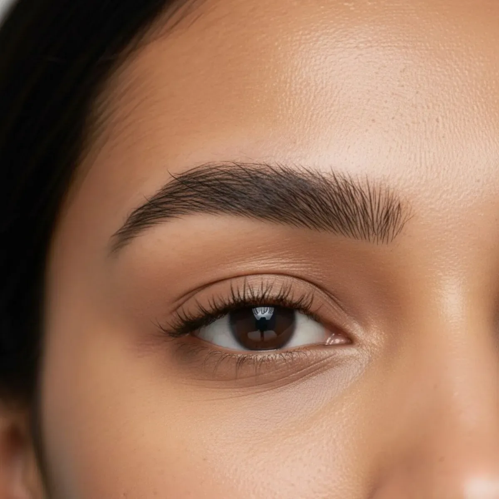
Micro-Hair PlacementAdvanced Hair Treatments — Explore All Services
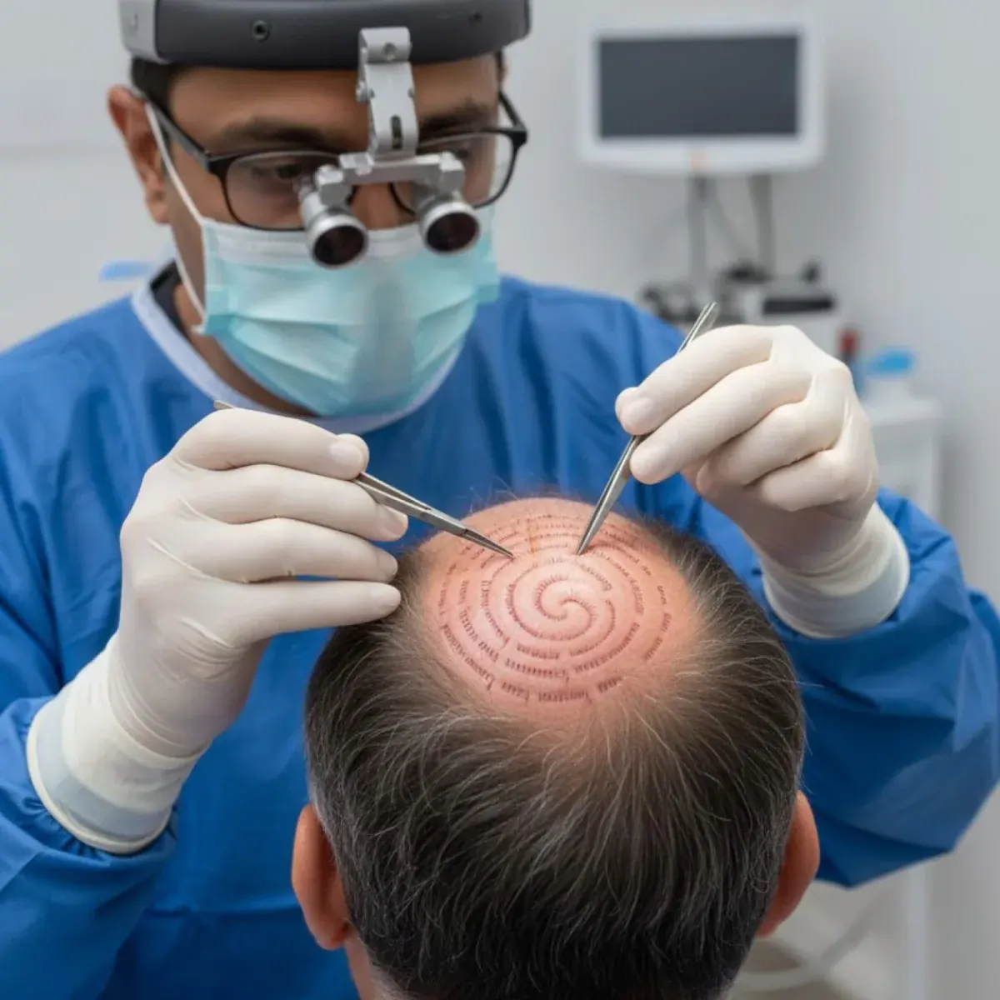
Crown Area Transplant
Restores density in the vertex/crown zone where hair patterns swirl.
Explore More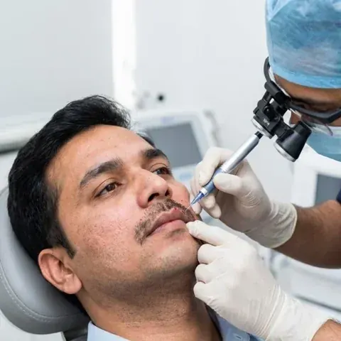
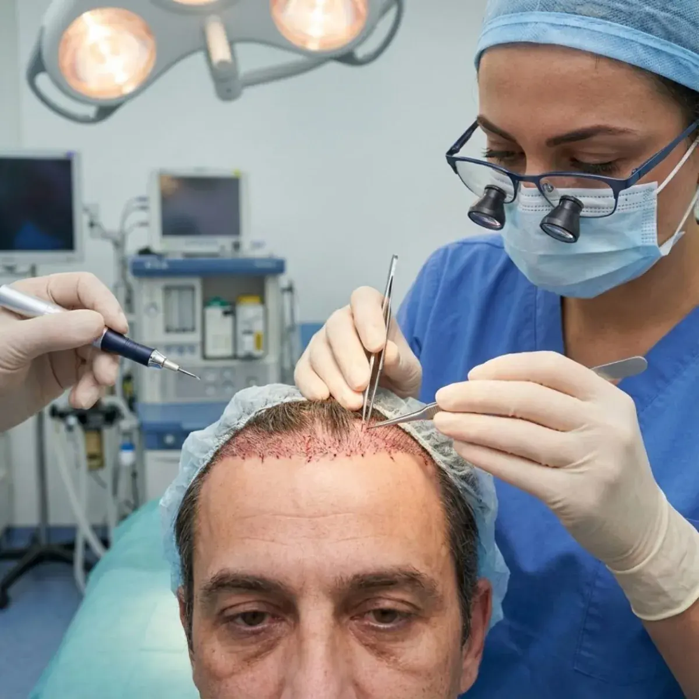
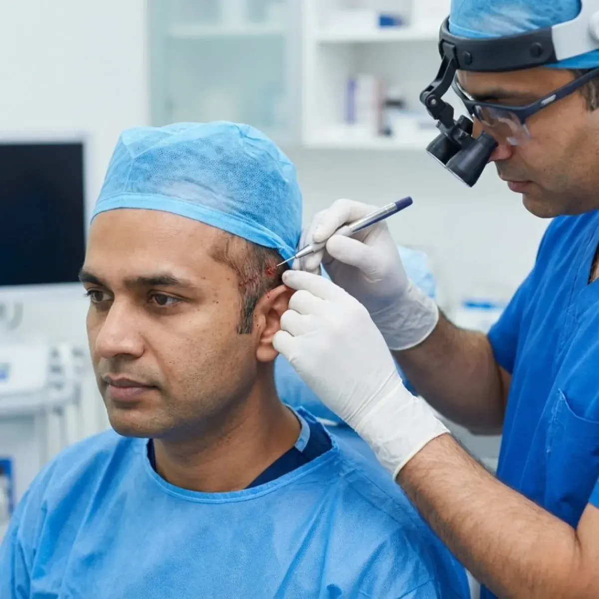
Sideburn / Temple Reconstruction
Enhances facial framing with natural feathered strokes.
Explore More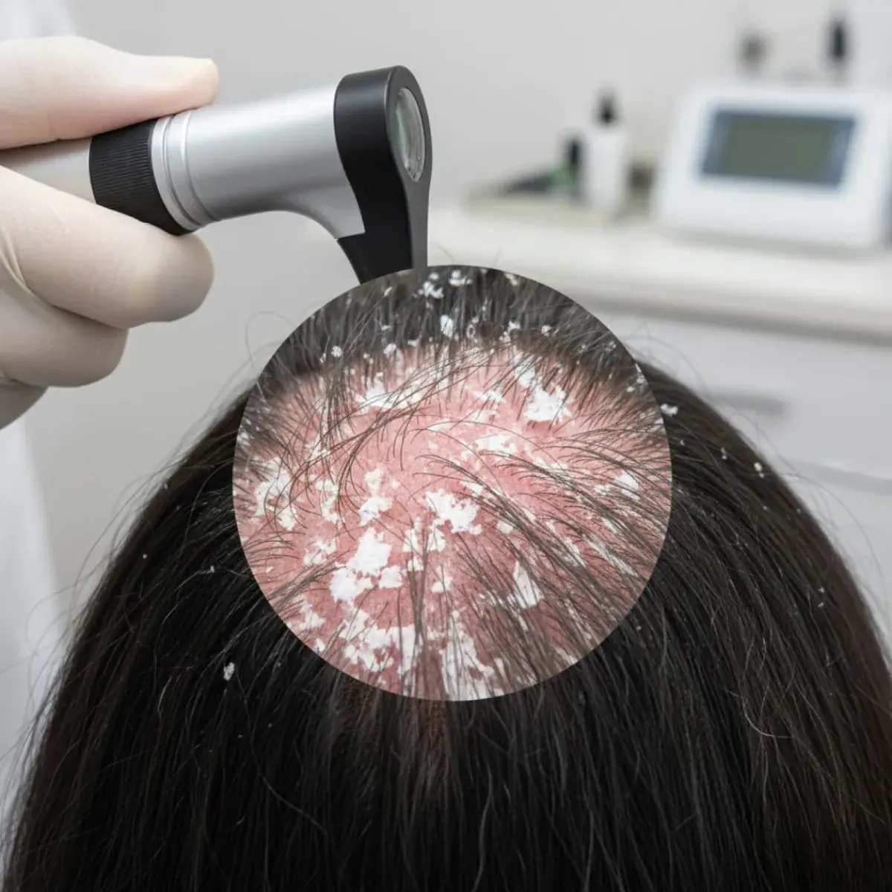
Anti-Dandruff / Scalp Treatment
Treat fungal infections, dermatitis & chronic dandruff.
Explore More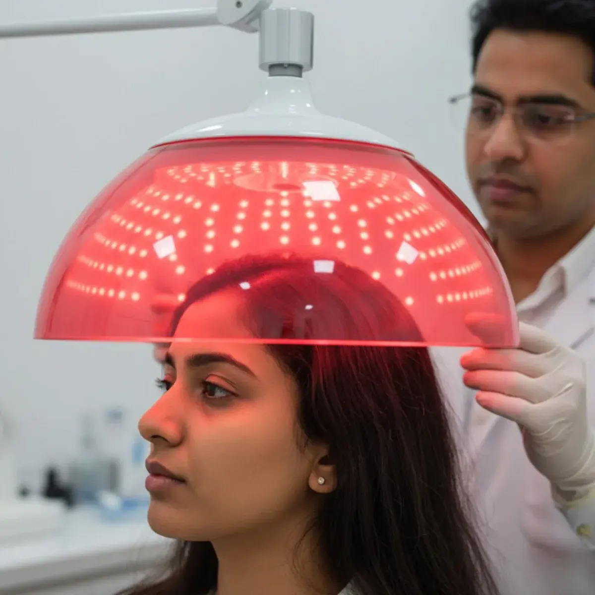
Advanced Hair Non-Surgical Treatments
Female Hair Restoration & Density Therapy
Female pattern hair thinning (Ludwig Scale), diffuse loss, and postpartum shedding require specialized, ultra-gentle dermatological care. Kezza Clinic offers discreet, personalized therapies focused on root-cause diagnosis, hormonal balancing, and non-shave restoration.
“Female hair loss requires addressing internal hormonal triggers alongside non-shave diffuse density restoration. Every procedure is performed in dedicated, strictly private female suites.”
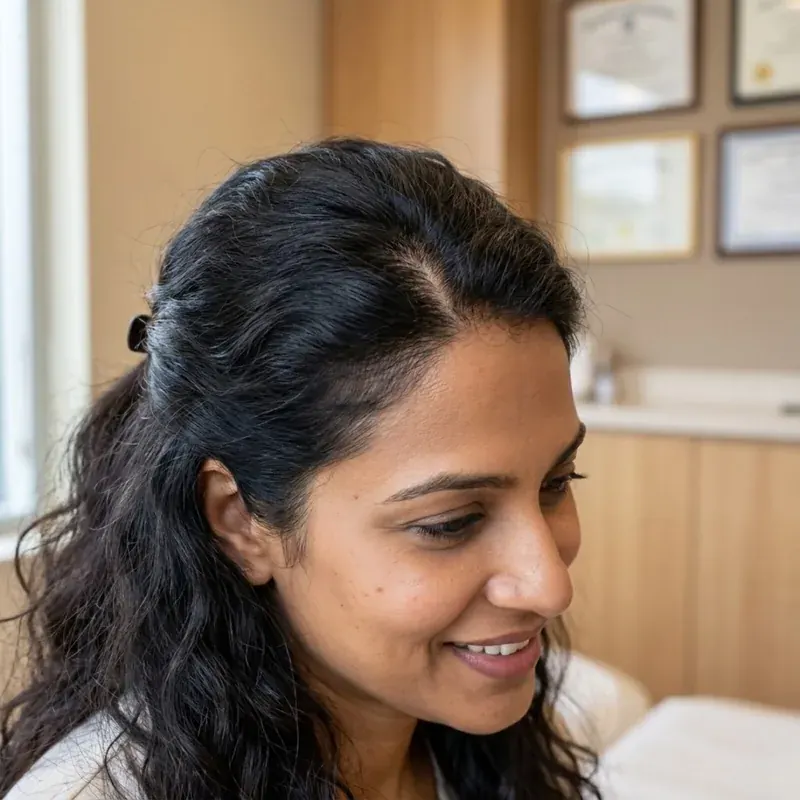
Confidential Female SuiteHair Transplant Process — Step-by-Step Journey
From your initial trichology assessment to full lifelong density, every stage is performed by specialist surgeons adhering to rigorous international hospital protocols.
Consultation & Assessment
Comprehensive medical history evaluation, scalp condition diagnosis, and personalized restoration goal setting with our lead surgeons.
Hair & Scalp Analysis
Digital trichoscopy to measure follicular unit density, miniaturization grade, and donor capacity with microscopic precision.
Treatment Planning
Artistic hairline mapping respecting facial golden ratios, graft count calculation, and zone distribution blueprinting for natural density.
Graft Extraction
Minimally invasive micro-punch extraction of healthy follicular units from the safe donor zone, leaving zero linear scars.
Graft Preparation
High-magnification microscopic inspection, sorting by follicle grouping, and chilled bio-nutrient preservation to ensure maximum viability.
Implantation
Precision micro-graft placement using sapphire blades or DHI implanter pens adhering strictly to natural growth angle and depth.
Recovery & Aftercare
Structured post-operative care package, medicated wash regimen, growth acceleration therapy, and scheduled clinical reviews.
Hair treatment prices at Kezza
Starting and per-session prices for our main hair treatments. Your plan is confirmed after a scalp assessment.
Real Patient Comments & Clinical Results
Authentic commentary and feedback from patients across Jaipur, Ajmer, and Rajasthan who chose Kezza Clinic for permanent hair density.
“I traveled from Ajmer to Kezza Clinic for temporal hairline restoration. The sapphire FUE procedure was remarkably comfortable with zero swelling. 8 months in, the density and feathering at the front hairline look natural. No scars at all!”
“Zero shaving of my existing hair and no scalpel cuts. The team placed grafts directly between my thinning crown hairs with the Choi pen. I was back at my office in 2 days. The crown is now completely thick and full.”
“I had patchy cheeks and an uneven mustache connection for years. Kezza's surgeons mapped a razor-sharp, natural beard line. The growth direction blends seamlessly with my facial contours. Exceptional care and professionalism.”
Frequently Asked Questions
Hair transplant procedures are performed under local anesthesia, ensuring patient comfort throughout. Most patients experience minimal discomfort during and after the procedure.
Yes, our advanced techniques ensure completely natural-looking results that blend seamlessly with your existing hair.
New hair growth typically begins 3-4 months after the procedure, with full results visible after 12-18 months.
Most patients can return to work within 2-3 days. Full recovery typically takes 7-10 days.
The number of grafts depends on your specific hair loss pattern and desired density. Our consultation will determine the exact number needed.
Hair Loss Scale & Damage Analysis
Understanding your stage of hair loss is the first step to the right treatment. Our specialists use the Norwood-Hamilton Scale alongside advanced trichoscopy to pinpoint your condition with precision.
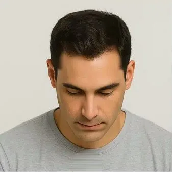
Normal & Healthy
Full hairline with no visible recession. Hair density is excellent.
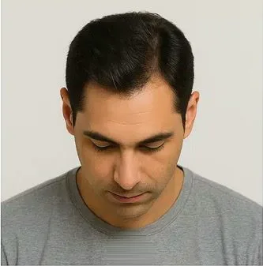
Early Recession
Slight temples recession. Hairline moves back symmetrically.
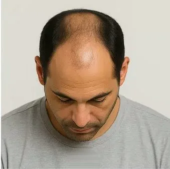
Moderate Recession
Deep temple recession. Crown thinning may begin. Visually noticeable.
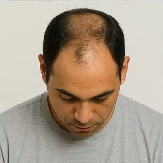
Significant Loss
Front hairline severely receded. Crown bald patch visible. Band of hair separates zones.
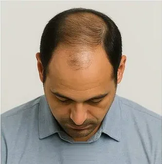
Advanced Loss
Large bald area. Only a narrow band of hair on sides and back remains.
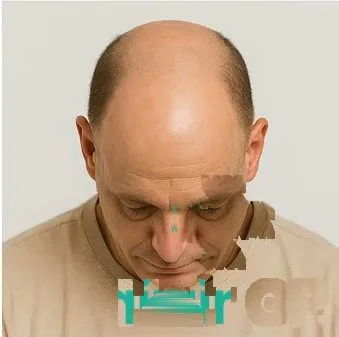
Complete Baldness
Only a thin rim of hair on the sides. Donor area still viable for large transplant.
Hair Loss Causes — Percentage Breakdown
Not Sure Which Stage You're At?
Book a clinical trichoscopy assessment with our senior surgeons for a precise diagnosis and graft calculation.
Start Your Hair Transformation Today
A consultation is your first step toward lasting confidence.
Book Consultation Now
“In Sapphire FUE, harvesting with 0.75mm blades at the follicle's exact exit angle ensures 99%+ graft survival and completely imperceptible micro-healed donor sites. Patients resume routine activities within 48 hours.”